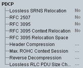

PDCP UE Capabilities
The UE capability information in the PDCP section indicates in which way the UE supports the packet data convergence protocol (PDCP) described in 3GPP TS 25.323.

PDCP UE capabilities
- "Lossless SRNS Relocation":
Support of lossless SRNS relocation - "RFC 2507":
Support of IP header compression according to RFC 2507 - "RFC 3095":
Support of robust header compression according to RFC 3095 - "RFC 3095 Context Relocation":
Support of context relocation applied to the RFC 3095 header compression protocol - "RFC 3095 Relocation Space":
Supported RFC 3095 relocation space in bytes - "Header Compression":
Maximum header compression context size supported by the UE. This parameter is only applicable if the UE supports header compression according to RFC 2507 - "Max. ROHC Context Session":
Maximum number of header compression context sessions supported by the UE. This parameter is only applicable if the UE supports header compression according to RFC3095 - "Reverse Decompression":
Number of packets that can be reverse decompressed by the decompressor in the UE. - "Lossless RLC PDU Size Change":
Support of lossless DL RLC PDU size change